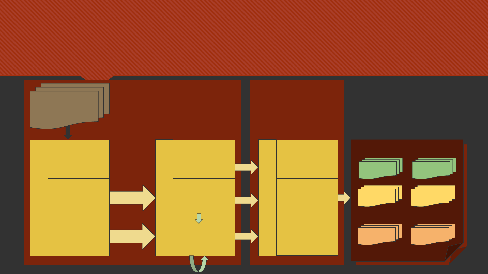

Ontology based
Instance Matching
VivekR.Shivaprabhu
CS586:DataandWebSemantics|Fall2016
Papers covered
1. Castano,Silvana,etal."Ontologyandinstancematching."Knowledge-driven multimedia information
extraction and ontology evolution.SpringerBerlinHeidelberg,2011.167-195.
2. Daskalaki,Evangelia,etal."InstancematchingbenchmarksintheeraofLinkedData."Web Semantics:
Science, Services and Agents on the World Wide Web39(2016):1-14.
3. Rong,Shu,etal."Amachinelearningapproachforinstancematchingbasedonsimilarity
metrics."International Semantic Web Conference.SpringerBerlinHeidelberg,2012.
4. Euzenat,Jérôme,andPavelShvaiko.Ontology matching.Vol.18.Heidelberg:Springer,2007.
5. Bizer,Christian."EvolvingtheWebintoaGlobalDataSpace."BNCOD.Vol.7051.2011.
Agenda
Introduction,Initiatives
Concepts
MatchingTechniques
BenchmarkDesignforInstanceMatching
WorkwiththeCityofChicago
Introduction
BigDataandtheexplosionoftheamountofavailabledata
Usergeneratedcontent–statusmessages,tweets,reviews,etc
Contentfromsensors–GPS,weather,healthtracking,etc
SemanticWebandtheneedtoorganizedata
LinkedDataparadigm
Unconstrainedpublicationofinformationbydifferentpublishers
InterlinkingofWebresources–same-asinterlinking
$13.19
Initiatives
LinkingOpenData–lod-cloud.net
PublishvariousopendatasetsasRDFontheWeb
SettingRDFlinksbetweendataitemsfromdifferentdatasources
180datasetsaltogetherhavingasizeofaround20billionRDFtriples
OntologyAlignmentEvaluationInitiative–oaei.ontologymatching.org
Defineconsensusforevaluationofmethodsavailableforschemaorontologymatching
Yearlyevaluationevents
BootstrappingOntologyEvolutionwithMultimediaInformationExtraction-mklab.iti.gr/projects/boemie
Also known as…
InstanceMatching
RecordLinkage
DuplicateDetection
EntityResolution
Deduplication
Merge-Purge
Entity-Identification
ObjectIdentification
DataFusion
IdentityResolution
Funfact:
TimBerners-Lee,directoroftheW3C,coined
theterm“Linked Data”ina2006designnote
abouttheSemanticWebproject.
www.w3.org/DesignIssues/LinkedData.html
Need for instance matching
Need for instance matching
Concepts - Agenda
DescriptionLogic–anoverview
IdentityResolution,SimilarityRecognition
SchemaMatching-Techniques
InstanceMatching-Techniques
vsRecordLinkage
OntologyMatching
Description Logic (DL) – an overview
Familyofformalknowledgerepresentationlanguages
Usedtodescribeandreasonaboutconceptsofan
applicationdomain(terminologicalknowledge)
TBox(terminologicalbox)
Containsstatementsdescribingrelationsbetween
concepts(hierarchies)
Ex:Everyemployeeisaperson
Abox(assertionalbox)
Containsgroundsentencesthatdescriberelationsbetween
individualsandconcepts
Ex:Bobisanemployee
http://wiki.opensemanticframework.org/index.php/Ontologies:_Basic_Groundings
Identity Resolution
Instancesdescribethesamereal-worldentity
Usedtojoindatasetsthatmayormaynotshareacommonidentifier(URI,Key,ID,etc)
Matchdatafrommyriadrecordshapes,storagelocationsand/orstyles
Data
Set
# SSN Name DOB Sex ZIP
SetA
1 000956723 Smith,William 1973/01/02 Male 94701
2 000956723 Smith,William 1973/01/02 Male 94703
3 000005555 Jones,Robert 1942/08/14 Male 94701
4 123001234 Sue,Mary 1972/11/19 Female 94109
SetB
1 000005555 Jones,Bob 1942/08/14
2 Smith,Bill 1973/01/02 Male 94701
Similarity Recognition
Evaluatethedegreeofsimilaritybetweentwoinstances
Instancesdescribedifferentreal-worldentities
Set A Set B Simil
arity
Title Subject Author Title Subject Author
TheSunShines
Bright(book)
Essaycollectionsby
IsaacAsimov
IsaacAsimov Quasar,Quasar,
BurningBright
Essaycollectionsby
IsaacAsimov
IsaacAsimov 0.99
Delittoincielo HerculePoirotnovels AgathaChristie Tragediaintreatti HerculePoirotnovels AgathaChristie 0.84
http://oaei.ontologymatching.org/2014/im/index.html
Schema Matching vs Instance Matching
Schema Matching, aka Concept Matching
Matchingofconceptsandpropertiesrepresentedby
TBoxesofDLontologies
Instance Matching
MatchingofassertionsrepresentedbyABoxesofDL
ontologies
DB1.Product DB2.Product
ID ItemNumber
Description WebDescription
BrandName TradeName
Material
Finish
OverallLength OAL
¼-20x3/8SSSHCS
StainlessSteelSocketHeadCapScrew,
1/4”Dia,20ThreadSize,3/8”Length
Schema Matching Techniques
SimilarityBased–measurethedegreeofsimilarityoftwoconcepts
Linguistic
Syntactic–stringstructure–usingedit-distance,automata,bit-parallelism,filtering
Semantic–meaning–usingsynonyms,hypernym/hyponym,dictionaries,thesauri
Contextual
Matchingbasedonproperties,semanticrelations,taxonomies,etc.Ex:usinggraphmatching
ReasoningBased–inferenceprobleminvolvingtwoontologiesandaninitialsetofmappings
Deductive–derivecandidatemappingsfromtheinitialsetofmappingsandtestsatisfiability
Probabilistic–calculatetheprobabilitythattwoconceptsaresimilarorhavesameinstances
Instance Matching
SimilartoRecordLinkageandDataDeduplication
Value-orientedtechniques
Record-orientedtechniques
Goal:
givenr
i
=[v
1
,...,v
m
],m:#attributes,
forapairofrecordsr
1
andr
2
,tofind
theoverallsimilaritySim(r
1
,r
2
)iscomposedof
thesimilaritiesSim(v
k1
,v
k2
),k:1..m
todetermineifr
1
andr
2
arethesamerealworldentity
Instance Matching: Record-oriented techniques
Learningbased–trainaclassifier
Requireshigh-qualitybalancedtrainingdata
SupervisedlearningusingSMEs,or
Unsupervisedmethodssuchasclustering
Combined/hybridmethods
Similaritybased
Usingweightedsimilaritymeasuresacrossmultiple
properties;weightscanbeassignedbyadomain
expertorusingstatisticalanalysis
Identifyingathresholdtodistinguishthematchesis
difficult
Rulebased
SpecialcaseofSimilaritybasedtechniques
Usesrulesthataredefinedbydomainexperts
Yieldsprecisematchingresults
Matcherisdomainspecific
Priorknowledgeandexpertiseisrequired
Contextbased
Matchingbyconsideringattributevaluesaswellas
theirrelationshipswithotherrecords(friends)
Usingacollectivemodelusingrecordsfrom
multiplesourcesbyconsideringsharedattribute
values
Instance Matching vs Record Linkage
StructuralHeterogeneity
LanguageExpressivity–structurallydifferent,butsemanticallyequivalent
DesignPractices–myriadmethodologiesforontologydesignareavailable,butconsolidatedandwidelyaccepted
designpatternsaremissing
ImplicitKnowledge
Informationinferredfromtheparent-childrelationshipsrepresentedinthehierarchicalrepresentationofontologies
IDorientedidentification
UsingURIorotheridentifiertorefertoaninstancesimplifiesinsertionandretrieval
Thisprovidessyntacticinstanceidentification,butitisuselessforinstancematchingtodeterminewhendifferent
instanceidentifiersrefertothesamereal-worldentity
Ontology Matching
Matchingontologicalknowledgeingeneral
bothTBoxesandABoxes
Usuallyperformedsemi-automatically
Findclassesofdatathataresemantically
equivalent(ex:TruckandLorry)
Threemajordimensionsforsimilarity:[2]
Syntactic–valueheterogeneity
External–structuralheterogeneity
Semantic–logicalheterogeneity
Matchingforlightweightintegration
Typicallysuitedforweb-scale,semanticweb,and
p2penvironments
Flexibleschemaandinstancemappingtechniques
arerequiredbyeachpeerfordiscovery
Matchingforsemanticcoordination
Techniquesandtoolstoeffectivelymanagethe
largedatasetssharedbetweensocialnetworksand
community-orientedcollaborationplatforms
Linguisticandinstancematchingareprominentto
matchpoorly-structuredorfully-unstructureddata
Benchmark Design -
Agenda
Theneedforevaluation
Linkedopendata
Benchmarkdesign
Benchmarkcharacteristics
Dataset,ReferenceAlignment,EvaluationCriteria
Futuredirections
The Need for Evaluation
Historically(pastdecade),instancematchinghasbeenwelldefinedforrelationaldata
Identifiesdifferencesbetweenvaluesofrelationalattributes
Littletonofocusonstructureorsemantics
LinkedDataaredescribedbyexpressiveschemasthatcarryrichsemanticsexpressedasRDFSandOWL
Variationsinthedatasourcesarevalue,structuralandlogical[3]
Whenpairedwithareasoningengine,LinkedDataallowsimplicitrelationshipstobeinferredfromthedata(which
wasnotpossiblewithrelationalorXMLdata)
Instancematchingsystemsdesignedforonetypeofdata(ex:XML)maynotbeabletofullyexploitthe
heterogeneitiesdescribedinRDFS/OWL.
Benchmarksfocusonmethods’abilitytopresentdifferencesinthenatureofdata–valuesandstructure–
aswellasthesemanticmeaningtheyimply.
Linked Open Data – Then and Now
May2007 Today
http://lod-cloud.net/
Benchmark Design
Itisnoteasytobethebest.Totrytobethebest,
identifyweakpointsthatcanthenbeworkedon
andimproved
Benchmarkshelpcomputersystemscompareand
assessperformances
Importantly,ithelpstopushhardertogetfurther
Resultsarearoughestimateofperformance
Itisonlyanindicationoftheeffectivenessofwhat
wastested
Doweneedabenchmarktomeasurethe
effectivenessofthebenchmark?
Benchmarking,fromaphilosophicalpointofview,is“the
practiceofbeinghumbleenoughtoadmitthatsomeone
elseisbetteratsomethingandwiseenoughtotryto
learnhowtomatchandevensurpassthematit.”
–JackGrayson,founder
AmericanProductivity&QualityCenter
https://www.apqc.org/c-jackson-grayson
Benchmark Characteristics
OpenandAccessibleforallinterestedparties
Persistentovertime
ThisrulesouttestingdatasetslikeDbpedia
Unbiased
Lackofstandardsleadstoself-reportedsynthetictestingdatasetsandreports
Differenttestcases
containssourceandtargetdatasets,
thereferencealignment,and
evaluationmetrics
Dataset characteristics
NatureofDatasets
Realdatasets–containrealdataandcanbeusedeitherasawholeorpartly
+Realisticconditionsforaddressingheterogeneityissues
+Distributionsthatreflectrealworldsituations
-Donotcomewithadequatereferencealignments
Syntheticdatasets–autogeneratedfromscratchorusingexistingdatasets
+fullycontrolledtestconditions
+accuratereferencealignments
+allowssettingthefocusonspecifictypesofheterogeneityproblemsinasystematicmanner
-datasetsproducedusuallycomewithunrealisticdistributions

Dataset characteristics
BenchmarkSchemasandDomains
Datasetscanhave:
thesameschema(instancelevelmatchingonly)or
differentschemata(schemamappingisalsoconsidered)
Similarlyfordomains
BenchmarkVariations
Variationsbetweenthematchedinstances
Valuevariations–dateformats,abbreviations,multi-lingualism,etc
Structuralvariations–mergedproperties,datatypes,etc
Logicalvariations–RDFS/OWLlanguageconstructs
Benchmark characteristics
ReferenceAlignment
Aka,GroundTruth,orGoldStandard
ManuallycuratedbySMEs,or
(Semi-)automaticallygeneratedusingsupervised
systemsorcrowdsourcing
TimeconsumingandErrorprone
If‘same-as’linksalreadyexist(ex:LOD),consider
theproblemofincompleteness
EvaluationMetrics
Determineandassessystembehaviorand
performance
BenchmarksproposedbytheTransaction
ProcessingCouncil*(TPC)aremostwidelyknown
Performanceandefficiencybased
Quality–correctanswers–ismoreimportant
Precision,
Recall,and
F-measure
*http://www.tpc.org/

Benchmark Evaluation Criteria
Qualitative
SystematicProcedure–reproducibletasks
Quality–preciseevaluationrulesandontologies
Equity–equaltreatmentsofmethods/systems
ReferenceAlignment–accuracyandcompleteness
Availability–datasetsandreferencealignmentare
alwaysreadilyavailableforusebyvarioussystems
Quantitative
Dissemination–howmanysystemshaveusedthis
benchmarkforevaluation
Volume–sizeofthedatasets;whetherthe
benchmarkalsotestsscalability
DatasetsVariations–typesandcomplexityofthe
variationsthatthedatasetsconsider
Synthetic Benchmarks
LODhas570datasetsas
of2015
Billionsoftriplesinsome
datasets
Real Benchmarks
Theabilitytoprovideareliable,(semi-)
automatederror-freereferencealignment
forrealdatasetsisanopenissueforthe
researchcommunity
Future Benchmark Directions
Specialdomainspecificdatawithspecificcharacteristics
Geo-spatial–semanticandtopologicaldimensionaswellsasinformationthatdescriestheposition,extensionand
shapeandrelationshipbetweenspatialfeatures
Tempo-spatialdata–timeperplexesthefactsofexistenceofplacesand/ornamesandtheirmeanings
Triangular(ortransitive)benchmarksthatmapthree(ormore)datasets
Insteadofjustsource-to-targetmappings
Project Work - Agenda
BusinessNamesMatchingwiththeCityofChicago
SimilarityMeasures
InitialResults
Business Names Matching for City of Chicago
Createaconsolidatedpictureofabusinessbyintegratingdata
frommyriaddatasources.
PotentialtocreatetheSingleSourceofTruthbyintegrating
variousspokesystems.
Matchingbasedon(ethereal)attributessuchasBusinessNames
andAddresseswithoutrelyingon(identifying)attributessuchas
LicenseNumbers.
Abilitytoscaleuptonewsourceswithease.
* work in progress * next in line * third party sources
Acme Corporation
Business
Licenses
Food
Inspections
Building
Permits
Business
Owners
Google places
/ businesses
Yelp ratings &
reviews
...
...

System Architecture
Stream
Matchers
IBusinessModelFactory
Business
Licenses
Factory
Food
Inspections
Factory
OtherData
Model
Factories...
IBusinessModel
Business
Licenses
Food
Inspections
OtherData
Models...
Text,XML,OWL,
SQL
Data
Models
IMatcher/Similarity
Business
Name(s)
similarity
Address
similarity
Othersimilarity
vectors
AcmeCorporation
Business
Licenses
Food
Inspections
Building
Permits
Business
Owners
Google
places
Yelpratings
&reviews
...
...
Load
Similarity Measures
ThefollowingsimilaritymeasuresarecalculatedforLegalandDBANamesfromthetwodatasets:
String.equals
aml.ISub.similarityontheoriginallegalanddbanames
similartotheLevenshteindistance.Thismethodisbasedonthelengthofcommonsubstrings
ISubsimilarityon'cleaned'versions(removeallspecialcharacters)fromnames
aml.weightedJaccard,wherewordsareweightedbylength
measureoftheoverlapthattwostringsAandBsharewiththeircomponentwordparts
Stopwordseliminationisimplemented,butnotused
Acronymcomparisonisimplemented,butnotusedduetotoomanyfalsepositives
Finalsimilarityvalue=maxvalueofthesemeasures
Initial Results (1 of 2): Name + Address Matching
FoodInspection(InspectionID=1953735,LegalName=DUNKINDONUTS,DoingBusinessAsName=DUNKINDONUTS/BASKIN
ROBBINS,Address=9100SCOMMERCIALAVE,City=CHICAGO,State=IL,Zip=60617),
� BusinessLicense(Id=2109876-20130916,LicenseId=2276758,LegalName=GunatitInc,DoingBusinessAsName=DUNKIN
DONUT,Address=9100SCOMMERCIALAVE1,City=CHICAGO,State=IL,ZipCode=60617),NameSimilarity=0.976,
AddressSimilarity=0.986,CityStateZipSimilarity=true)
� BusinessLicense(Id=2109876-20110822,LicenseId=2109876,LegalName=GunatitInc,DoingBusinessAsName=DUNKIN
DONUT,Address=9100SCOMMERCIALAVE1,City=CHICAGO,State=IL,ZipCode=60617),NameSimilarity=0.976,
AddressSimilarity=0.986,CityStateZipSimilarity=true)
� BusinessLicense(Id=2109876-20150916,LicenseId=2416718,LegalName=GunatitInc,DoingBusinessAsName=DUNKIN
DONUT,Address=9100SCOMMERCIALAVE1,City=CHICAGO,State=IL,ZipCode=60617),NameSimilarity=0.976,
AddressSimilarity=0.986,CityStateZipSimilarity=true)
� ...
Initial Results (2 of 2): Name + Address Matching
FoodInspection(InspectionID=1950927,LegalName=HAMBURGERMARY'SCHICAGO,DoingBusinessAsName=
HAMBURGERMARY'SCHICAGO,Address=5400NCLARKST,City=CHICAGO,State=IL,Zip=60640),
� BusinessLicense(Id=1677595-20060921,LicenseId=1677595,LegalName=THEBIGFOUR,LLC,
DoingBusinessAsName=HAMBURGERMARY'SCHICAGO,Address=5400NCLARKST2,City=CHICAGO,State=IL,
ZipCode=60640),NameSimilarity=1.0,AddressSimilarity=0.981,CityStateZipSimilarity=true)
� BusinessLicense(Id=1677596-20130716,LicenseId=2259674,LegalName=THEBIGFOUR,LLC,
DoingBusinessAsName=HAMBURGERMARY'SCHICAGO,Address=5400NCLARKST2,City=CHICAGO,State=IL,
ZipCode=60640),NameSimilarity=1.0,AddressSimilarity=0.981,CityStateZipSimilarity=true)
� BusinessLicense(Id=1598382-20060816,LicenseId=1735062,LegalName=THEBIGFOUR,LLC,
DoingBusinessAsName=HAMBURGERMARY'SCHICAGO,Address=5400NCLARKST,City=CHICAGO,State=IL,
ZipCode=60640),NameSimilarity=1.0,AddressSimilarity=1.0,CityStateZipSimilarity=true)
� BusinessLicense(Id=1598381-20060525,LicenseId=1598381,LegalName=THEBIGFOUR,LLC,
DoingBusinessAsName=HAMBURGERMARY'SCHICAGO,Address=5400NCLARKST,City=CHICAGO,State=IL,
ZipCode=60640),NameSimilarity=1.0,AddressSimilarity=1.0,CityStateZipSimilarity=true)
� ...
36
Next steps
Business-to-Businessmatchingtogroupmultiplelicensesintoasingle‘entity’
Additionalsimilaritymeasurestoexpandthematchvectordimension
Startincorporatingnewdatasets-bothinternalaswellasthirdpartyresources
Thank you!
Discussion